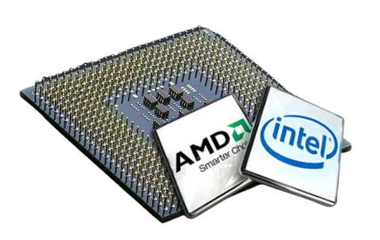
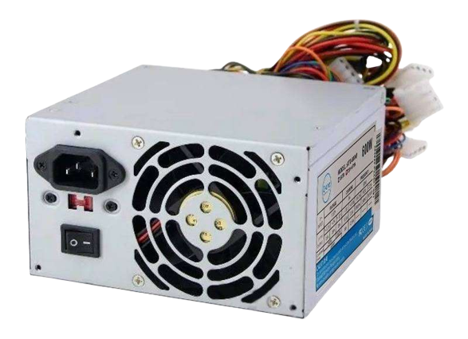
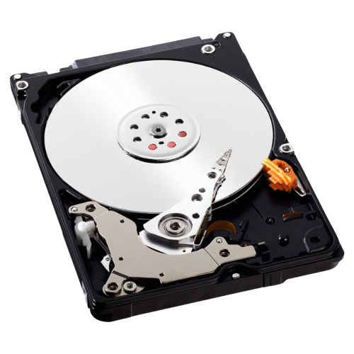
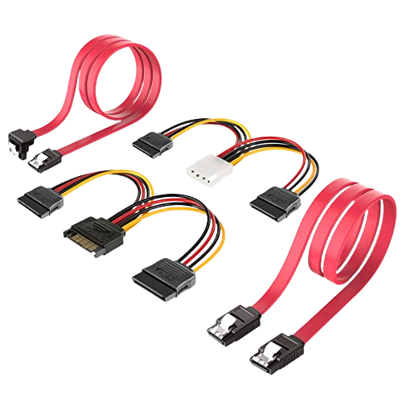

Partes internas del computador
Las partes internas de una computadora son aquellas que no se encuentran expuestas a la vista comúnmente, sino que forman las “entrañas” del aparato ocultas dentro del CPU (del inglés Central Processing Unit o Unidad Central de Procesamiento). Su funcionamiento es totalmente esencial para el correcto comportamiento del sistema informático.
A continuación detallaremos los principales componentes de una computadora:
Procesador

El procesador realiza los cálculos que sostienen el software entero.
El procesador es un circuito electrónico que actúa como el cerebro lógico y aritmético de la computadora, ya que es allí donde se llevan a cabo los miles de millones de cálculos por segundo que sostienen el software entero.
Es fácilmente reconocible en la Placa base, pues se trata de un cuadrado negro con un pequeño ventilador encima, ya que suelen necesitar de refrigeración constante para evitar una sobrecarga.
Los procesadores (microprocesadores, hoy en día) pueden ser de distintas marcas y operar a altas velocidades, generalmente medibles en gigahercios (Ghz).
Placa Base
Los diversos módulos y tarjetas se insertan en la placa base.
También conocida como la tarjeta madre, es la tarjeta principal del CPU, en donde se encuentra el procesador, las ranuras para la memoria RAM, los módulos de ROM y en donde se insertan directamente las demás tarjetas del sistema.
Se trata de una serie de circuitos en una misma plataforma, que hacen de núcleo del sistema, integrando sus distintos componentes internos. Es allí donde se encuentra el Firmware, o sea, el software pre programado de fábrica en el sistema.
Fuente de poder

El corazón del sistema, que suministra energía eléctrica a la Placa base y a todos los demás componentes del CPU, de modo que puedan operar cuando se los necesite y que puedan mantener ciertos sistemas básicos e indispensables andando cuando el computador se encuentre apagado.
Memoria RAM

Su nombre proviene de las siglas de Random Access Memory o Memoria de Acceso Aleatorio. Son una serie de módulos conectados a la Placa base, adónde van los programas a ejecutarse, tanto los activados por el sistema como los activados por el usuario. Sin embargo, todo lo que se encuentre en la memoria RAM se borrará cuando el sistema se apague o se reinicie.
No se la debe confundir con la memoria ROM (de Read-Only Memory, o sea, Memoria de Sólo Lectura) que se encuentra contenida en la placa base, y de la cual únicamente pueden extraerse datos. Tampoco con el espacio de almacenamiento en disco.
Almacenamiento

El almacenamiento (ya sea una unidad de disco duro o una unidad de estado sólido) almacena los datos a largo plazo para un acceso permanente. Es el componente que accede y almacena sus archivos, aplicaciones y sistema operativo. La unidad de almacenamiento no es volátil lo cual significa que los datos almacenados se conservan incluso cuando apaga la computadora. Para obtener más información sobre las unidades de estado sólido, lea aquí. La memoria y el almacenamiento funcionan junto con el procesador de la computadora (CPU) para acceder y usar los datos.
Disco duro o HDD (Hard Drive Disk):

Los discos duros, también conocidos como HDD, son un componente informático que sirve para almacenar de forma permanente tus datos. Esto quiere decir, que los datos no se borran cuando se apaga la unidad como pasa en los almacenados por la memoria RAM. La primera empresa en comercializarlos fue IBM en 1956.
Están compuestos de piezas mecánicas, de ahí que a veces se le llame discos duros mecánicos, y utilizan el magnetismo para grabar tus datos y archivos. Se compone de uno o varios discos rígidos unidos por un mismo eje y que giran a gran velocidad dentro de una caja metálica. En cada plato y en cada una de sus caras, un cabezal de lectura/escritura lee o graba tus datos sobre los discos.
Cuanto más finos sean los discos mejor será la grabación, y cuanto más rápido giran a mayor velocidad se transmiten los datos, tanto a la hora de leerlos como al escribirlos. Por lo general, la velocidad de los discos duros suele ser de 5400 o 7200 RPM (revoluciones por minuto), aunque en algunos discos basados en servidores pueden llegar a hasta 15.000 RPM
En cuanto al tamaño, las cajas de los discos duros mecánicos pueden ser de 2,5" o de 3,5". Su precio puede variar dependiendo de este tamaño, pero sobre todo de su capacidad de almacenamiento. De hecho, la gran ventaja de estos discos duros con respecto a los SSD es que son bastante más económicos.
Unidades de estado sólido o SSD (Solid State Drive):

Las unidades de estado solido, tambien conocidas como SSD, son una alternativa a los discos duros. La gran diferencia es que mientras los discos duros utilizan componentes mecánicos que se mueven, las SSD almacenan los archivos en microchips con memorias flash interconectadas entre sí. Por lo tanto, casi podríamos considerarlos como una evolución de las memorias USB.
Las SSD suelen utilizar memorias flash basadas en NAND, que como también son no-volátiles mantienen la información almacenada cuando el disco se desconecta. No tienen cabezales físicos para grabar los datos, en su lugar incluyen un procesador integrado para realizar operaciones relacionadas con la lectura y escritura de datos.
Estos procesadores, llamados controladores, son los que toman las "decisiones" sobre cómo almacenar, recuperar, almacenar en caché y limpiar los datos del disco, y su eficiencia es uno de los factores que determinan la velocidad total de la unidad. Además, al no depender del giro de un componente físico, también se logra una unidad más silenciosa que los discos mecánicos.
En cuanto al tamaño, estos discos suelen ser de 2,5", y tienen un diseño casi idéntico al de los discos duros mecánicos, lo que ayuda a que puedan encajar en las mismas carcasas y ranuras donde van montados los discos duros convencionales en un ordenador.
Diferencias entre HDD y SSD:

La llegada de los SSD a nuestros ordenadores hace ya algunos años, supuso una completa revolución en el almacenamiento interno de datos. Este almacenamiento se había estado realizando, desde el comienzo de la informática de consumo, en los discos duros. Pero los nuevos dispositivos de almacenamiento sólido prometían velocidades de acceso a los datos prácticamente instantáneas. A diferencia de lo que sucede con los discos duros. ¿En qué se diferencian ambos tipos de tecnologías de almacenamiento?
La tecnología en la que se basa el diseño y desarrollo de los discos duros no ha variado mucho desde que se inventaron, allá por el año 1956. Cierto es que, gracias a los avances, cada vez se pueden grabar más datos sobre la superficie de los discos. Pero el principio sigue siendo el mismo: hay un buje central, al que van sujetos uno o varios platos (discos), cuya superficie va recubierta de un material ferromagnético. Los datos se graban cambiando el campo magnético de cada sector. Y, para leerlos y/o grabarlos, es necesario el uso de una cabeza lectora, llamada «peine».
Dado que el funcionamiento de todo el disco duro implica la rotación de los platos, con el consiguiente movimiento de la cabeza lectora para localizar los datos, a los discos duros se les denomina «dispositivo de almacenamiento mecánico». Por tanto, decir «disco duro mecánico» es una redundancia, dado que todos los discos duros son mecánicos.
La gran diferencia entre un SSD y un disco duro es que carece de partes móviles
Por contra, un SSD es un dispositivo de almacenamiento sólido (Solid State Drive). Es decir, en su interior solo hay chips de memoria NAND Flash. Y un controlador que dirige el acceso a las diferentes direcciones de memoria en los chips. No hay, por tanto, partes móviles. Y es esta diferencia la que es la más importante entre ambos tipos de dispositivos de almacenamiento.
Si bien para que un disco duro localice una información, este debe de girar el disco duro hasta un punto y mover la cabeza lectora de manera que se sitúe sobre el punto sobre el que se ha grabado. En el caso del SSD, lo único que debe pasar es que el controlador dé orden de acceder a la dirección de memoria donde se han almacenado dichos datos. Esto hace que el acceso sea, a ojos del usuario, prácticamente instantáneo.
Pero no solo es esta una diferencia. Dado que el SSD no necesita almacenar la información en una parte móvil, no se ve limitado en su rendimiento por dichas partes. Es por ello que, si bien los discos duros pueden alcanzar velocidades de transferencia secuencial de datos cercanas a los 200 MB/s. Los SSD hace ya bastante tiempo que dejaron atrás estas tasas. El hecho es que, algunos dispositivos sólidos son capaces de alcanzar actualmente más de 4 GB/s de tasa de transferencia de archivos.
Otra importante diferencia entre un SSD y un HDD está en las operaciones aleatorias o IOPS. Si bien las unidades mecánicas pueden llegar hasta los 100 o 200 IOPS, las unidades sólidas pueden alcanzar las 80.000 o 90.000 IOPS con facilidad.
La desventaja de los SSD frente a los discos duros es su durabilidad
Si bien, hasta ahora solo hemos hablado de diferencias que son positivas para los SSD, también las hay negativas. De ellas, la más importante es la durabilidad de sus células de memoria. Porque, si bien un disco duro puede grabar y leer datos de sus platos durante años, porque estos no se desgastan. No sucede lo mismo con las células de memoria. Cada una de estas células tiene una vida útil muy definida, calculada por el número de operaciones de escritura de datos en ella.
Una vez que se excede el número de operaciones de escritura, la célula deja de funcionar. Y, a medida que se han desarrollado tecnologías para grabar mayor número de bits por cada celda, ha ido descendiendo su expectativa de vida útil. Las actuales células QLC tienen una vida útil muy inferior a las células SLC, MLC o TLC. Los avances en el diseño de los SSD tienen ahora métodos para distribuir mejor el desgaste de estas células a través del Wear Levelling y el overprovisioning. Sin embargo, su vida útil sigue siendo inferior a la de un disco duro.
El precio es lo que impide que se implanten más los dispositivos sólidos
La última gran diferencia negativa entre ambos dispositivos de almacenamiento, es el precio por GB. Este precio, en un disco duro, es muy muy bajo. Esto nos permite comprar unidades de 2 y 3 TB de almacenamiento a unos precios bastante decentes. En cambio, en el caso de los dispositivos sólidos, es bien sabido que el precio de estos sigue siendo bastante más elevado que el de los discos duros. Y ahora tenemos la enorme suerte que durante gran parte del 2018 los precios de los dispositivos sólidos han caído en picado. Reduciéndose, en muchas ocasiones, a la mitad o un tercio de lo que costaban originalmente.
Según han pasado los años las ventas de discos duros han ido en declive en favor de los SSD, y actualmente prácticamente cualquier equipo ya cuenta con un SSD, aunque sea de interfaz SATA 3, ya que proporciona un enorme incremento de rendimiento con respecto a los discos duros. La tecnología ha hecho que los productos que ahora se escapan del alcance del usuario medio sean los SSD en formato M.2 y con interfaz PCIe 4.0, pero los SSD SATA 3 están ahora al mismo nivel de precio que antaño los discos duros convencionales.
En todo caso se ha de tener en cuenta que a no ser que necesites almacenar unos grandes volúmenes de datos, una gran capacidad de almacenamiento tampoco es necesaria. No hay que olvidar como la memoria flash reemplazo a los discos duros en los reproductores MP3 pese a tener menos capacidad. Por lo que al final no todo se resume en tener toda la capacidad del mundo, sino en tener la mayor capacidad posible. Poco a poco nos vamos acercando al fin de los discos duros.
Cables de datos

Los cables de datos sirven para la transmisión de información entre los componentes del CPU, del mismo modo como lo hacen nuestras venas y arterias. Existen distintos tipos de cables, como el bus de datos (de 16, 32 y 64 bits), el cable IDE que conecta los discos a la Placa base, o el cable de datos SATA. Suelen ser de colores específicos y tener terminales específicos.
Tarjeta de video

Cuanto mejor sea la placa de video, mayor será la calidad de la imagen.
La Tarjeta de video o Placa de video es una tarjeta secundaria, conectada a la Placa base, que se especializa en el procesamiento de la información referente al video, o sea, a la emisión de imágenes y movimiento en monitores, proyectores, etc.
Dependiendo de sus capacidades, por lo tanto, podremos tener mayor calidad de imagen y más rápidas animaciones, o incluso efectos tridimensionales o resoluciones HD.
Tarjeta de sonido

Similar a la Placa de video, la Placa de sonido va integrada a la Placa base, pero sus labores se especializan en el procesamiento de las señales de audio, o sea, en la calidad, velocidad y nitidez de las emisiones sonoras y musicales que el sistema sea capaz de emitir, lo cual es clave a la hora de ver películas, jugar juegos, etc.
Tarjeta de red

La tarjeta de red permite que la computadora esté conectada con otras.
El tercer tipo de tarjeta que suele hallarse enclavado en la Placa base es la Placa de red, que es un administrador de las conexiones informáticas que el sistema puede establecer con redes o directamente con otros computadores.
Estas tarjetas suelen incorporar puertos de conexión para cables telefónicos o de fibra óptica, y también adaptadores de WiFi o redes inalámbricas, que pueden ser gestionados por el usuario empleando el software apropiado.
Ventilador

Debido al elevado tráfico de corriente y de información dentro del sistema, el CPU es un lugar muy caluroso, por lo que siempre es necesario un disipador de calor, en forma de ventilador.
Este artefacto extrae el aire caliente y permite que las temperaturas internas disminuyan, ya que un sobrecalentamiento detendría el sistema y podría incluso dañar permanentemente algunos de sus delicados componentes.